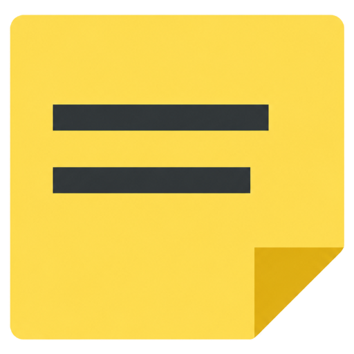

새 버전이 있습니다


인쇄 창에서 배율 100%, 여백 없음, 머리글/바닥글 끄기를 확인하세요.
빈 종이 윗면에 화살표를 그리고 아무거나 인쇄해 보세요. 표시한 면에 찍히면 포스트잇 면을 위로, 반대 면에 찍히면 아래로 넣으면 됩니다.
포스트잇을 클릭하면 바로 고칠 수 있습니다. 위쪽 도구줄에서 굵게, 밑줄, 구분선, 크기, 색, 이모티콘을 씁니다.
펜, 직선, 네모, 원을 고르고 드래그합니다. 색, 굵기, 채우기를 고를 수 있고 Shift를 누르면 정사각형과 정원이 됩니다.
사진 버튼이나 Ctrl+V로 넣습니다. 사진을 클릭하면 크기, 배치(글자처럼, 배경, 앞), 흐림을 조절하고 배경은 끌어서 옮깁니다.
빈 칸의 "+ 템플릿 넣기"로 바로 넣을 수 있습니다. 고친 칸은 목록 옆에 노란 점이 생깁니다. 저장하면 "내 템플릿"에 남고, 다른 PC로는 내보내기 → 가져오기.